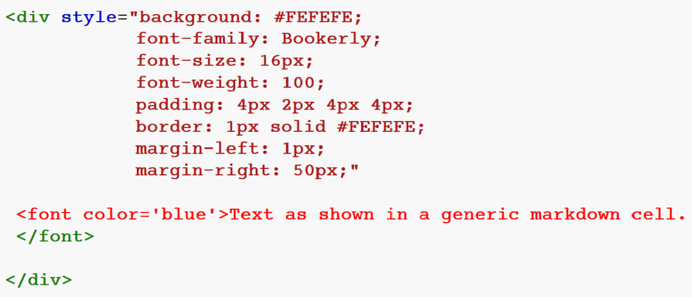

These notes target win10. It is necessary to have Python installed before installing jupyter. Currently all is working well with latest python, version 3.10.2.
Do not use conda. Strip everything mentioning conda from the machine. (Think of the gigs you’ll save.)
Do not install with 'pip install notebook' . This installs to interior of Python folder and the paths to the effective custom.css are not available. Instead install with 'pip install jupyter'.
The custom.css page at https://gist.github.com/atsukoba/beb7ec3fd1927dacf2f6df4b0f209f22 is the only one found which works right out the box, giving effective and direct access to fonts for Code, and Code Output. It goes in the folder \Users\'name'\.jupyter\custom. The 'custom' folder may need to be created. Note that in the css page, the change output area style section describes no specific font attributes. Therefore it is necessary to paste in the three applicable ones: family, size, and weight, taking them from a neighboring section.
Instead of putting the desired fonts into a separate font folder within .jupyter/custom, putting them right into the main 'custom' folder is preferable. The 'fonts' folder is unnecessary. Normally, only one font face, such as ‘regular’ is required, alternatives being cast on the fly. If shopping for a Code font, consider Courier Prime in 700 units of weight.
The last three bullets above apply only to Code cells, unfortunately. It is still important to be able to change the font characteristics of Markdown cells. The image below shows the governing code corresponding to a vanilla Markdown cell. It is actually specifying addition of a colored rectangle superimposed with text, but the color used is so light that it reads as white. As you can see, font family, size, and weight can be assigned. In this case an extremely low weight is chosen, because Bookerly font is already semi-bold (you are reading it now). Note that the font color tag must be placed directly before the first text word.

Other concerns. To get the notebook to open in a non-Edge browser, edit the Properties dialog of one of the runtimes in C:\Users\'name'\AppData\Roaming\jupyter\runtime with directions that it be opened by the desired browser.
Remember that any changes for a notebook must be saved (File > Save_and_Checkpoint) before clicking on 'Reload'.
When saving a file, it is important to include the .ipynb extension, otherwise Jupyter cannot decipher it properly on opening.
Instead of disseminating via PDF it is preferable to disseminate with raw notebooks. Give people the true goods. It is recognized that in some cases it is necessary to resort to PDF.
Matplotlib
has changed recently. The three lines below are common ones when
using matplotlib:
import matplotlib.pyplot as plt
import
matplotlib.ticker as ticker
%config
InlineBackend.figure_formats = ['svg']
The matplotlib svg terminal is as easy to set up as any other. The svg format rules. When converting a pdf to svg in Inkscape, select Poppler/Cairo import. Find a tutorial describing use of Object > Clip to free the content area from the parent sheet, then resize the supporting document to reduce margins to minimum before exporting as svg. If the image imported into Jupyter needs to have small left margin, for example, make sure there is lots of righthand blank space in the svg when exported from Inkscape. (Or find a smarter way to position images.)
Ridiculously obvious but still . . . When running a notebook, remember that it is necessary to Shift + Enter to reawaken a python cell.
Last edited on 24 Feb 2022